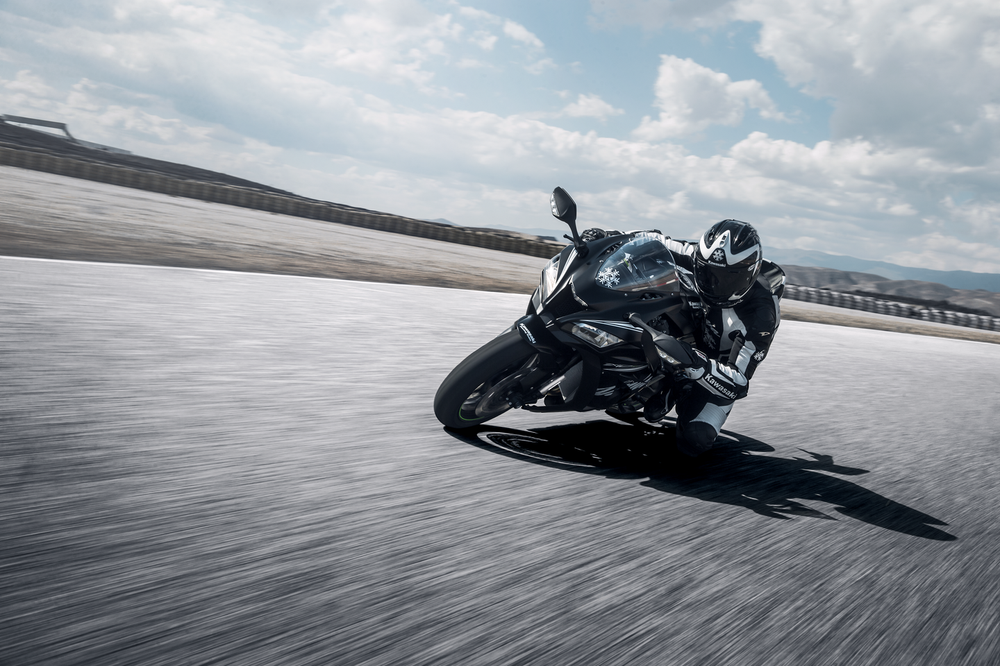
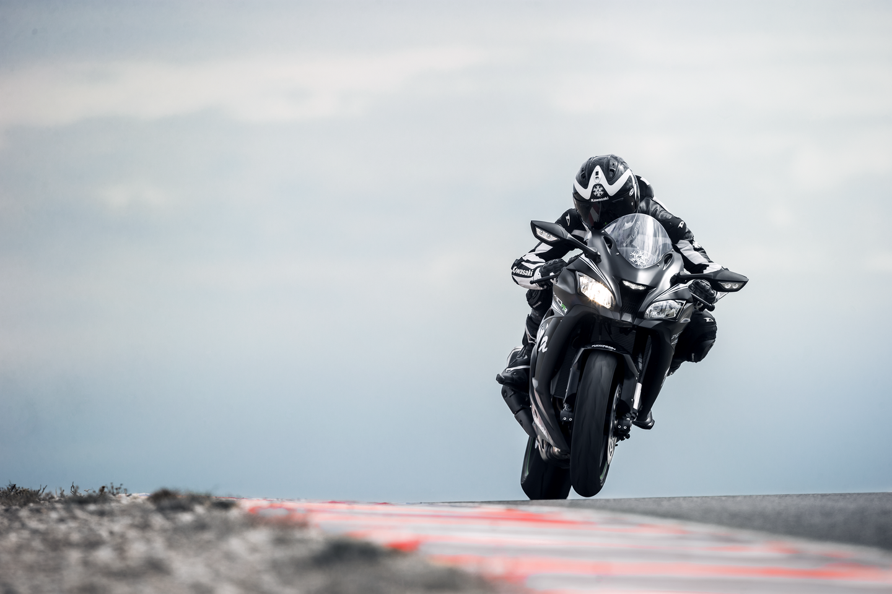

Это - единственный достойный соперник. Оборудованный легковесными литыми дисками MARCHESINI и тормозами Brembo M50, новый Ninja ZX-10RR в цветах Winter Test не берет пленных. Стань ближе и испытай модифицированные головку блока цилиндров и картера, а так же новый квикшифтер. Трек призывает к победам - и новый Ninja ZX-10RR слышит этот зов.
Так же данная модель широко известна под названиями: ниндзя, десятка, ZX1000Z.
Это - единственный достойный соперник. Оборудованный легковесными литыми дисками MARCHESINI и тормозами Brembo M50, новый Ninja ZX-10RR не берёт пленных. Стань ближе и испытай модифицированные головку блока цилиндров и картера, а также новый квикшифтер. В 2019 году по всему миру будет продано только 500 мотоциклов, оснащенных титановыми шатунами, благодаря которым пиковая мощность увеличена до 204 л.с. Трек призывает к победам - и новый Ninja ZX-10RR готов ответить на зов!
Предлагаемые аксессуары разработаны с использованием тех же технологий, что и Ninja ZX-10RR и одобрены для эксплуатации вместе с данной моделью, позволяя обеспечить лучшую производительность и функциональность.
